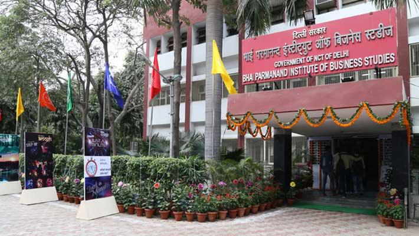
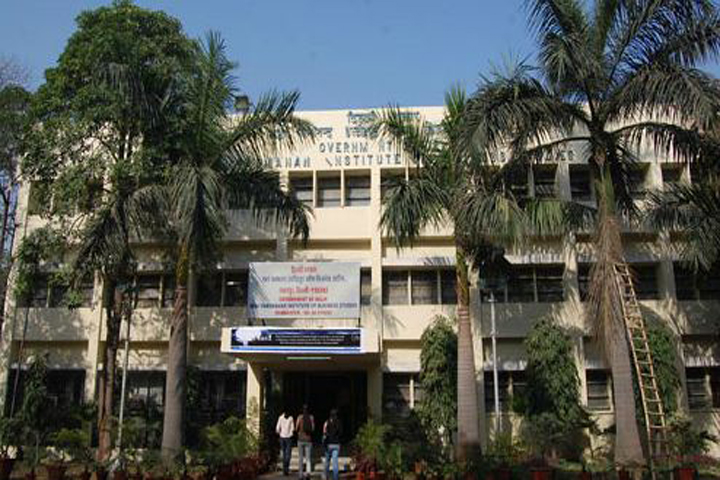
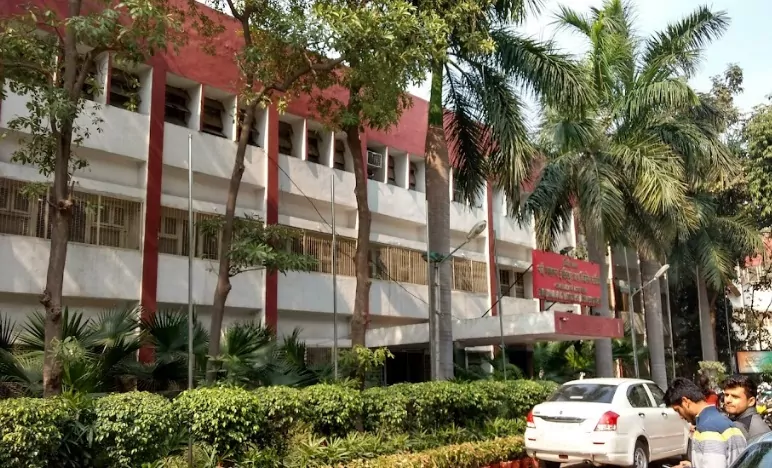

Bhai Parmanand Institute of Business Studies is a Technical Institute promoted by Government of Delhi in 1986 by naming after Bhai Parmanand, a famous Sikh Martyr from Punjab and functioning under the Department of Training and Technical Education, Government of NCT of Delhi, has set a new benchmark in the Technical Education in India. The institute housed in spacious buildings at a DDA plot. The Institute has been Initially, this Institute was established as a unit under polytechnic of technical education department in 1965. Later this Institute attained independent identity as “Institute of Commercial Practice” in the year 1972. The Institute has been contributing to train the youngsters in vocational-cum-job oriented courses in the stream of management, Secretarial Practice and Entrepreneurship Development.
  